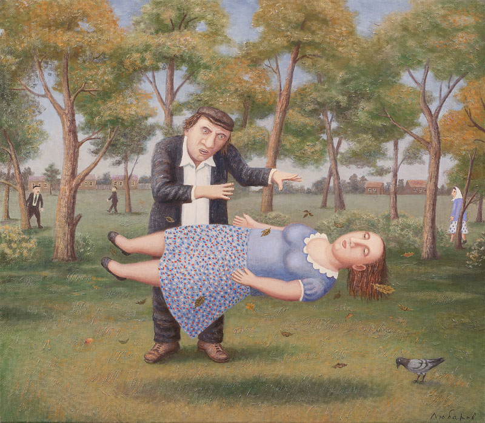

There are numerous applications for hypnosis across multiple fields of interest, including medical/psychotherapeutic uses, military uses, self-improvement, and entertainment. The American Medical Association currently has no official stance on the medical use of hypnosis. However, a study published in 1958 by the Council on Mental Health of the American Medical Association documented the efficacy of hypnosis in clinical settings.

A Session of Hypnosis, oil on canvas by Vladimir Lubarov.
Hypnotherapy
Hypnotherapy is a use of hypnosis in psychotherapy.[84][85][86] It is used by licensed physicians, psychologists, and others. Physicians and psychologists may use hypnosis to treat depression, anxiety, eating disorders, sleep disorders, compulsive gambling, and posttraumatic stress,[87][88][89] while certified hypnotherapists who are not physicians or psychologists often treat smoking and weight management.
Hypnotherapy is a helpful adjunct having additive effects when treating psychological disorders, such as these, along with scientifically proven cognitive therapies. Hypnotherapy should not be used for repairing or refreshing memory because hypnosis results in memory hardening, which increases the confidence in false memories.
Military
A 2006 declassified 1966 document obtained by the US Freedom of Information Act archive shows that hypnosis was investigated for military applications.[148] The full paper explores the potentials of operational uses.[148] The overall conclusion of the study was that there was no evidence that hypnosis could be used for military applications, and no clear evidence whether "hypnosis" is a definable phenomenon outside ordinary suggestion, motivation, and subject expectancy. According to the document:
The use of hypnosis in intelligence would present certain technical problems not encountered in the clinic or laboratory. To obtain compliance from a resistant source, for example, it would be necessary to hypnotise the source under essentially hostile circumstances. There is no good evidence, clinical or experimental, that this can be done.
Self-Hypnosis
Self-hypnosis happens when a person hypnotises oneself, commonly involving the use of autosuggestion. The technique is often used to increase motivation for a diet, to quit smoking, or to reduce stress. People who practise self-hypnosis sometimes require assistance; some people use devices known as mind machines to assist in the process, whereas others use hypnotic recordings.
Self-hypnosis is claimed to help with stage fright, relaxation, and physical well-being.
Stage Hypnosis
Stage hypnosis is a form of entertainment, traditionally employed in a club or theatre before an audience. Due to stage hypnotists' showmanship, many people believe that hypnosis is a form of mind control. Stage hypnotists typically attempt to hypnotise the entire audience and then select individuals who are "under" to come up on stage and perform embarrassing acts, while the audience watches. However, the effects of stage hypnosis are probably due to a combination of psychological factors, participant selection, suggestibility, physical manipulation, stagecraft, and trickery. The desire to be the centre of attention, having an excuse to violate their own fear suppressors, and the pressure to please are thought to convince subjects to "play along".[153] Books by stage hypnotists sometimes explicitly describe the use of deception in their acts; for example, Ormond McGill's New Encyclopedia of Stage Hypnosis describes an entire "fake hypnosis" act that depends upon the use of private whispers throughout.